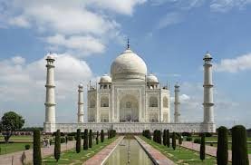
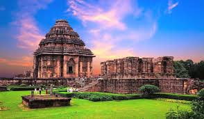
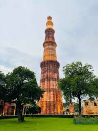
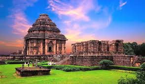
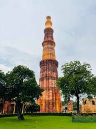

Virtual Tour 1: Famous Indian Monuments and Temples
Explore India's rich cultural heritage by visiting its world-renowned monuments and temples.
About This Tour
India is home to some of the world's most incredible monuments and temples, each representing a piece of the country’s diverse culture, history, and architectural mastery. This virtual tour takes you through the highlights of Indian heritage, giving you an in-depth look at some of the most iconic landmarks.
Highlights of the Tour:
- Taj Mahal - Agra, Uttar Pradesh
The Taj Mahal is one of the Seven Wonders of the World, built by Emperor Shah Jahan in memory of his wife Mumtaz Mahal. This stunning white marble mausoleum, completed in 1653, is not only an architectural masterpiece but also a symbol of eternal love. The intricate carvings, gardens, and reflective pools make the Taj Mahal a must-see monument. - Brihadeeswarar Temple - Thanjavur, Tamil Nadu
This 11th-century Hindu temple is dedicated to Lord Shiva and is a UNESCO World Heritage Site. Known as the "Big Temple," Brihadeeswarar Temple was built during the reign of the Chola dynasty under Raja Raja Chola I. The temple's towering gopuram (gateway tower), elaborate sculptures, and massive stone architecture are awe-inspiring. It remains one of the largest temples in India. - Konark Sun Temple - Konark, Odisha
Constructed in the 13th century, the Konark Sun Temple is dedicated to the Sun God, Surya. Its shape resembles a colossal chariot with intricately carved stone wheels, pillars, and walls. A UNESCO World Heritage Site, the temple is famous for its majestic Kalinga architecture and serves as a significant symbol of India's rich artistic and cultural history. - Qutub Minar - New Delhi
The Qutub Minar is the tallest brick minaret in the world, standing at 73 meters. It was constructed in 1193 by Qutb-ud-din Aibak to commemorate Muslim dominance in Delhi after defeating the last Hindu kingdom. The minaret is surrounded by other historical structures like the Quwwat-ul-Islam Mosque and the Iron Pillar, adding more intrigue to this historical landmark. - Meenakshi Temple - Madurai, Tamil Nadu
A breathtaking example of Dravidian architecture, Meenakshi Temple is dedicated to the goddess Meenakshi and her consort, Sundareswarar (Lord Shiva). The temple complex is known for its towering gopurams, adorned with thousands of colorful sculptures depicting gods, goddesses, and mythical creatures. It’s a vital pilgrimage site and a jewel of South Indian temple architecture. - Hampi - Karnataka
Once the capital of the Vijayanagara Empire, Hampi is now a UNESCO World Heritage Site filled with numerous ruined temples, palaces, and monuments. The grandeur of structures like the Virupaksha Temple and the Vittala Temple, with its iconic stone chariot, reflects the artistic and architectural brilliance of ancient India.
Each monument and temple comes with rich cultural stories, architectural details, and historical significance, offering a virtual experience that brings you closer to India's diverse heritage.
Featured Monuments and Temples
 


